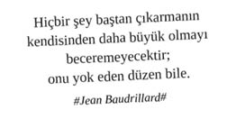

Ege hakkında ilkokulda öğrendiği, daha doğrusu tekerleme gibi ezberlediği şeyler bunlar. Samsonite valizini büyük olmamasına özen göstererek itinayla hazırlamış, bir tane de muhtelif elektronik araç gereç ve zaruri ihtiyaçlardan oluşan küçük el valizi yapmıştı, tır dorsesi gibi kocaman valizle tatile çıkmanın profesyonel imaja nasıl zarar vereceğini gayet iyi biliyordu. Birazdan Ege kıyılarına doğru süzülecek olan uçağa binmek için CIP salonuna yöneldi.
“...Denize dik uzanan dağlarıyla Ege Bölgesi koy ve körfezlerce zengindir, böylece kıyıların sahip olduğu doğal limanlar da çokçadır. Ege, bu sayede kıyıların oluşturduğu bir turizm bölgesidir...”
Elindeki BlackBerry’ye baktı, az önce sessizce duran cihazın o kırmızı ışığı yanıp sönmeye başlamıştı. Canı sıkılsa da her durumda işine olan bağlılığı ve böylece kendini gerçekleştirme güdüsü tekrar baskın çıkmıştı, her haliyle tarz ve profesyonel duruşuna kelebek konduran bu kırmızı ışığı yanıp sönen cihazı daha da önemli bir edayla elinde hafifçe ileri iterek pozisyonuna oturttu ve tuş kilidini açtı... Gelen mesajın içeriğini zerre kadar önemsemediğini biliyordu, derinlerde yatan ses ona etrafına ne kadar meşgul, dolayısıyla “önemli” biri olduğunu okuyor, uçağa geçiş anında bile kendisine emanet edilen milyonlarca liralık bütçeyi son derece etkin kullanmak için gereken önemli kararları tek elinde bir muska gibi tuttuğu bu cihaz üzerinden alıyor, aksiyon alması gerekenlere iletiyordu...
Ege’de dağların denize dik uzandığı ve bunun doğal sonuçları bilgisi ona küçük bir çocukken bir tekerleme, bir masal gibi ezberletilmiş, sonrasında muhtelif zamanlarda ve ortamlarda geleceğini inşa edebilmesi için soru olarak yöneltilmişti. Yani bilgisi haritaya hâkim olmak seviyesindeydi. Şimdi ise girintisi çıkıntısı bol Ege kıyılarının bu sebeple sahip olduğu koy ve körfezlere doğru yolculuk yapıyordu, iznini kullanmak yani ruhunu deniz, kum ve beraberinde meydana gelen okazyonların sahnelendiği oyunda izlemek üzere rahatına çekilmişti. Onun için gerçeklik, iki saat kadar sonra bir BlackBerry haritası, fotoğraflar ve uzun Ege koylarının bir noktasında check-in olmak üzerinden tekrar inşa edilecekti işte...
Gerçeklik ile aralarındaki bağın çekim gücünde yıllara yayılmış ciddi dalgalanmalar yaşıyordu. Yaşamış olduğu dünyanın gerçeklikleri, dişlerinin sivri uçlarını büyük bir profesyonellik ile saklayarak tüm samimiyeti ve içtenliği ile kendisine sırıtırken, onun aklı yine filmin son karesinde idi. Acıların çekildiği, gözyaşlarının dinmediği, egoların gerçeklik torna tezgâhında meze olduğu kare... İşte o kare idi kendisini sanal âlemlerin sanal karakterlerle bezenmiş hüzünlü dehlizlerine iten.
Çok fazla olmayan arkadaşları arasında Foursquare mecrasını ilk keşfedenlerdendi. Gerçeklik düzleminde sanal check-inler yapma, mekânlara notlar, yapılması gerekenler bırakma ve yaptığı check-in’lere göre rozet toplama fikri çok hoşuna gitmişti. Enteresandır, arkadaşlık bağlarının gücüyle sanal haritada geçirdiği zaman ve oluşturduğu gerçeklik algısı ters orantılı gelişiyordu. Başlarda dikkatini çekmeyen bu durum, dijital verilerden oluşan yapay sinir mesajlarının ördüğü ağ büyüdükçe, profilinin yakasına taktığı rozetlerin şekli ve sayısı zenginleştikçe bu ters orantıda bir dalgalanma yaşandığını da hissetmeye başlamıştı; haritayı keşfe çıkan şehrin diğer dijital azizleriyle bir profil yakınlaşması hissetmeye başlamıştı. Gerçek adını, yüzünü bilmediği bu profiller dünyasında yolunu arayan harita kâşifleri mekân deneyimleri üzerinden ikili ilişkilere yelken açıyor, profesyonel nezaketin deneyim aktarımı esnasında izin verdiği ölçüde yemleme seferleri birbirini kovalıyordu. Aslında zeminde yürüyorken, bıraktığı izler bu dört köşeli haritaya kayıt düşüyor ve şehrin tüm deneyimleri haritanın azizleri tarafından alacakaranlık bir zeminde paylaşılıyordu. Fırsatların, sonu gelmez arayışların ve korkutan, acınası şuuraltı motivasyonların içinde bir süre gidip geldi. Peki, neler yaptı, neden yaptı?
Foursquare Motivasyonları
Platforma ilk kayıt olduğunda sanal İstanbul adeta dutluktu. Gittiği mekânda check-in olmak istediğinde çok uzaklardaki yerler de kendisine öneriliyordu. Böylece kendini İstanbul’u fethetmeye hazır sanal bir Fatih gibi görüyordu.
Her gittiği yerde bulunan mekânları Foursquare üzerinde açıp adeta şehri sanal ortamda yapılandırıyordu.
İşte tam bu noktada dünya çapında bir “Master of Check-in” olma vizyonu ile Hattori Hanzo Usta’nın entegre tekamül sürecine dahil olmak için Japonya’nın yolunu tuttu.
Foursquare’in dünya çapında tartışmasız ismi Hattori Hanzo Usta’nın temel prensiplerini acılı da olsa benimsedi, anladı ve hayatının her noktasına entegre etti.
Hattori Hanzo Usta’nın Foursquare Prensipleri
Bir hafta içerisinde hatırı sayılır bir puan topla. Öncelikle listendeki arkadaşlarını ezmeyi unutma, ama asıl hedefin globalde Top 100 listesinin içerisine girmek olsun. Arkadaşlarının, Top 100’deki kişilerin puanlarını ve kendi konumunu sürekli kontrol et.
İstanbul’un temel mekânlarını ilk açan, açılmış olanların ise mayor’ı ol ve mayor’lığı kaptırma.
(Örn: Boğaziçi Köprüsü, Fatih Sultan Mehmet Köprüsü, Atatürk Havalimanı, X AVM’si, X AVM’sinin önü, yanı, arkası vb.)
Mekânlar açılmış, mayor’lıklar kapılmış ise; sürekli yeni mekânlar aç ve mayor’lığını al.
(Örn: X şirketi Y katı, X Şirketi Y Katı Z Cubicle’ı, X sitesi Y blok, X Sitesi Y blok Z dairesi, Öz-Boğaziçi Köprüsü, Boğaziçi Köprüsü Girişi, Boğaziçi Köprüsü Ayakları vb).
Mekânlar açılmış, mayor’lıklar kapılmış, yeni mekânlar açılmış onların da mayor’lıkları alınmış ise mekân uydur ve uydurduğun mekânların mayor’lığını al.
(Örn: Sanat icin Soyunan Kirpiler Lokali, Internet Nereye Gidiyor? Düşünce Evi, Dömi Vole Ses Sanatları Merkezi, Umutlarıyla Sevişenler Lokali, Avatar Roku Tantuni Evi, Deadline Şerbet Evi, Konferans İnsanları Dinlenme Salonu, Hüzünlü Tikkyler Lokali, Kral Tertipler Sanat Galerisi, Off Brief Trigonometri Merkezi, Sabah Mahmuru Penguen Bakım Onarım Merkezi, Clementine Dürümcüsü, To Do List Kumrucusu, Pikaçu Seçme Yerleştirme Merkezi, Mr Bison Toast Tesisleri, Meeting Request Sir Ağda Salonu, İki Süper Film Birden Hayat Evi, Mitokondri Yoga Merkezi, Meritocracy Kumrucusu, Guile Tarak Enstitüsü, Yalnız Güneş Şahitti Treni, To the Point Masaj Salonu, İnternet ile Oynaşanlar Altın Günü, Topoloji Spa Merkezi, vb.)
Bir mekânın mayor’lığını almak için her gün kendine alarm kur ve düzenli check-in olmayı unutma.
Mayor’ın işe gelmediği, mekâna gelmediği gün ve saatleri çok iyi değerlendir. (Unutma! Özellikle yıllık izinler her mayor takipçisinin sürek avı şölenidir.)
Herkeste olmayan rozetlere sahip olmak büyük bir prestij sebebidir.
(Örn: Tır Şöförü Rozeti, Keçiboynuzu Kişisel Gelişim Rozeti, Ateşli Çemberden Atlama Rozeti, To-Do-List Bükme Rozeti, Şalgam Rozeti, Mekândan En Hızlı Kız Kaldırma Rozeti, Mekânda En Sağlam Erkek Öteleyen Kız Rozeti, 1000 Kişi ile Geri Geri Yürüme Rozeti, 3000 kişi birlikte Geğirme Rozeti, Türev Almadan Limit Sorusu Çözme Rozeti vb.)
Dolayısıyla rozet türlerine göre check-in ol. Farklı rozet türlerine etrafında çok fazla rastlamıyorsan, farklı rozet türlerine göre yeni mekânlar aç.
Fiziksel olarak bir mekâna gittiğinde hemen check-in ol ve kimlerin check-in olduğuna bak. Fotoları seni etkilerse hemen arkadaşlık teklifi yap, iletişime geç ve masaları birleştirin.
Fiziksel olarak bir mekâna gitmeden önce an itibariyle en trending olan, kişilerin en çok check-in olduğu mekânlara bak ve oraya check-in olarak diğer check-in olanları incele, beğendiğin takdirde mekâna fiziksel olarak git ve ortamın keyfini çıkar.
Düzenli olarak arkadaşlarının check-in olduğu mekânları takip et. Zamanın ve nefesin varsa onların check-in’lerinden faydalanarak arkadaşların ile buluşma fırsatları oluştur.
İstanbul’un en prestijli restoran, gece kulübü, sanatsal mekânlarını belirle ve bu mekânlara düzenli olarak fake check-in’ler yap. Bu check-in’leri Twitter ve Facebook’ta da paylaş. Böylece herkes senin ne kadar prestijli bir hayat yaşadığına tanıklık etsin.
(Örn: Her cumartesi geceye Asmalı Mescid’de başlar, Etiler’de devam eder, Reina’da kapanışı yaparım. Her pazar sabah kahvaltımı mutlaka Çırağan Sarayı’nda yaparım. Hafta içi her gün İstanbul’un en prestijli spor salonuna gider, kaslarımı kasarım. Haftada iki gün öğle yemeğimde iş dünyasının prestijli bir ismi ile Sunset’te sushi yerim ve mutlaka fotoğraf paylaşırım.)
Check-in olduğun her mekân ile ilgili / ilgisiz mutlaka bir comment bırak. Mümkünse mekânın sote bir yerinin fotoğrafını çekip yorumunla ilişkilendir. Böylece gittiğin mekânda kimsenin göremediğini görerek farklı ol.
Check-in olduğun mekândaki yiyecek içecek sunumlarının mutlaka fotoğraflarını çek ve mesaj bölümüne yaratıcı bir başlık atarak farklılaş.
Swarming gördüğün, hissettiğin mekâna vakit kaybetmeden check-in ol. (Örn: Konser, Maç, Toplu Türev Alma Etkinliği vb.)
Foursquare bünyesinde özgün listeler oluştur. İnsanlar oluşturmuş olduğun listeler karşısında saygı ile şapka çıkarsınlar.
(Örn: Ciğerciler, İşkembeciler, Ara Ütücüler, Sir Ağdacılar, Hava Bükücüler, Sakızı Havaya Fırlatıp Dömi Vole Vuranlar vb.)
1000 arkadaş limitini doldurmak havalıdır. “Daha fazla kişi kabul edemiyorum” mesajı itina ile verilir. Yeni kişileri almak için bazılarını silmek gerekeceğinden, havalı bir “Kim gitsin?” süreci yaşanır.
Foursquare, apaçilikte sınır tanımayan nadir platformlardandır, saatte 500 kişi ekleyebilirsin ve çok fazla ret alırsan Facebook gibi seni cezalandırmaz.
Ad ve soyadını ayrı hanelere girersen, adın yabancılara “Behzat Ç” şeklinde görünür. Gizemli bir hava katarsın adına, soyadına, kimliğine...
Bir mekânı ev olarak kaydettiysen oranın tam konumunu değil civarını gösterir. Ancak evini kabak gibi “Behzat’s malikâne” diye kaydedersen kapı numarasına kadar gösterir. Evde check-in olmak önemlidir. “O kadar çok geziyorum ki evde olmam bir olay” mesajı itinayla verilir.
Listendeki profesyonellere mesajla ulaşamazsın. Bunun için çok kastırma, gerçeklerle yüzleş artık. Ancak eklediyse Twitter / Facebook hesabından ulaşabilirsin ya da yaptığı bir check-in’in altına kamuya açık yorum yazabilirsin.
Kız arkadaşın / erkek arkadaşın nerede kiminle ne yapıyor? Takip etmene yardımcı olabilir. Ancak burada önemli olan sadece kız arkadaşını ya da erkek arkadaşını değil onların da arkadaşlarını takip etmektir. Dolayısıyla çift dikiş check-in kontrolü sayesinde fake check-in’ler ya da check-in olmama durumları daha kolay takip edilebilir.
Foursquare hayatımıza girdiği andan itibaren hırsızlar her gün mecra sahiplerine dua etmektedir.
Yurtdışına çıkmadan önce mutlaka havalimanında Boarding Pass ile lounge’da check-in yapılması gerekmektedir.
Yurtdışına çıkıldığında normal check-in frekansından çok daha fazla check-in yapılmalıdır.
(Örn: İndim, şuradayım X havalimanı; araba kiraladım, direksiyon kadrajlı foto; otele geldim, X hoteli, odanın derli toplu fotosu; akşam yemeğe gittim X mekânı, efsane yemek menüsü ve fotosu; ertesi gün turistik X yerine gittim, fotosu; Y deneyimini Z kişisi ile yaşadım ve fotosu vb.)
“I’m at X with Y others” kalıbındaki Y değişkeni ismin ile yan yana duracak kişiler olmalı. Dolayısıyla check-in olmadan önce mekânda kimlerin olduğunu detaylı bir şekilde incelemelisin.
Hastanede check-in olacaksan öncelik olarak Acil Servis’te check-in ol. İlgiyi daha hızlı üzerine çekersin.
“Specials nearby” fırsatlarını takip eden, bunları kullananlardan olma. Daha cool dur.
Hattori Hanzo Usta’nın temel Foursquare prensiplerini hayatının her noktasına entegre etmesi gerçeklik ile olan zayıf bağını kökünden koparmıştı. Acıların çekildiği, gözyaşlarının dinmediği, egoların gerçeklik torna tezgâhında meze olduğu sahneleri daha şiddetli yaşayacak ama hissetmeyecekti...
